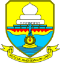
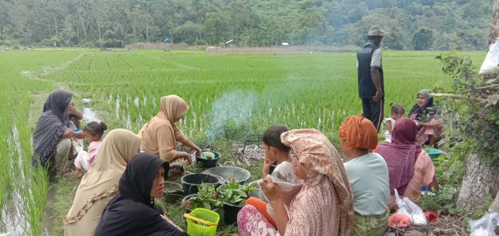
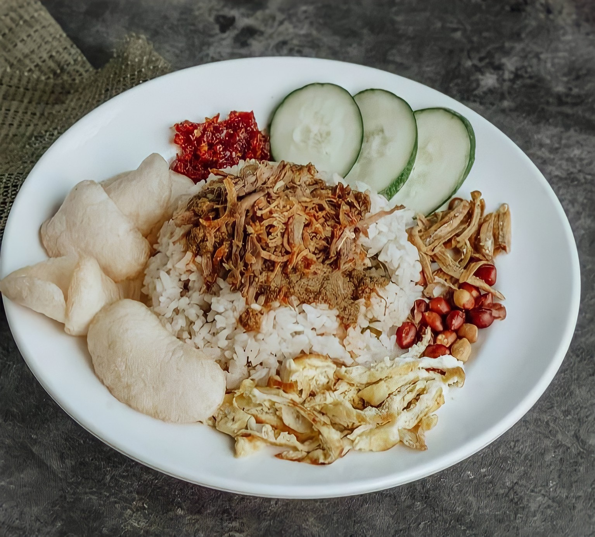

Sumatra
Nusa Tenggara
Maluku
Papua
Jambi
Jambi adalah sebuah provinsi di Indonesia yang terletak di pesisir timur, di bagian tengah pulau Sumatra, ibu kotanya berada di kota Jambi. Provinsi dengan luas wilayah 50.160,05 km2 ini, pada tahun 2021 memiliki jumlah penduduk 3.548.228 jiwa. Provinsi Jambi adalah nama provinsi di Indonesia yang ibu kotanya memiliki nama sama dengan provinsi selain Bengkulu, Daerah Khusus Ibukota Jakarta, Daerah Istimewa Yogyakarta, dan Gorontalo. Jambi juga terkenal mempunyai kompleks percandian agama Hindu-Buddha terluas di Asia Tenggara, dengan luas 3981 hektar, yang dikenal dengan nama Candi Muaro Jambi. Kemungkinan besar merupakan peninggalan kerajaan Sriwijaya dan Melayu.
Informasi Umum
| Nama Provinsi | Kode Wilayah | Kode Internasional | Singkatan Umum | Ibu Kota | Hari Libur | Lambang |
|---|---|---|---|---|---|---|
| Jambi | 15 | ID-JA | - | Jambi | 6 Januari 1957 |  |
Budaya

Rumah Panggung Kajang Lako adalah rumah tradisional masyarakat provinsi Jambi. Secara arsitektural, rumah panggung ini dibangun dengan tetap mempertahankan gaya tradisional yang merupakan warisan dari generasi nenek moyang masyarakat Jambi, baik pada bagian interior maupun pada bagian eksteriornya. Rumah tradisional ini tidak hanya dibangun sesuai dengan fungsi praktis rumah sebagai tempat tinggal, tetapi juga dibangun dengan memperhatikan fungsi sosial dan budaya masyarakat Jambi.
Pakaian adat Jambi disebut dengan Baju Kurung Tanggung. Baju Kurung sendiri digunakan untuk pernikahan. Disebut Pakaian Adat Kurung Tanggung lantaran baju ini hanya memiliki panjang lengan sampai bawah siku dan tidak sampai pergelangan tangan. Baju Kurung Tanggung didesain demikian karena masyarakat berharap laki-laki Jambi harus tangkas dan cekatan dalam mengerjakan sesuatu.
Tari Rentak Besapih. Tarian tradisional ini menggambarkan rentak langkah dari berbagai etnis untuk menjadi kesatuan yang utuh dalam menjalani kehidupan bersama, seperti bekerja sama dan tolong menolong. Tarian ini juga menggambarkan Provinsi Jambi merupakan provinsi yang aman. Jumlah penari yang memperagakan tarian ini sebanyak delapan hingga sepuluh orang. Para penari tersebut menggunakan busana atau pakaian adat Melayu Jambi dengan hiasan di bagian kepala dan kain tenun Melayu.
Di Provinsi Jambi, terdapat berbagai macam bahasa yang digunakan oleh penduduknya, yaitu bahasa Indonesia, Bahasa Melayu (dialek Jambi), Bajau Tungkal Satu, Banjar, Bugis, Jawa, Kerinci,dan Minangkabau. Tidak menutup kemungkinan bahwa masih terdapat bahasa yang belum terpetakan karena melihat dari luas wilayah, batas wilayah, sejarah, hingga perkembangan Provinsi Jambi. Bahasa-bahasa yang ada di daerah Jambi sejalan dengan penyebaran penduduknya, sehingga bahasanya ditemukan pada daerah tertentu dan memiliki ciri khas dialeknya masing-masing.

Tradisi kumau merupakan sebuah tradisi yang biasanya dilakukan oleh para petani ketika akan mulai turun ke sawah. Tradisi ini biasanya dilakukan setelah ada gejala alam yang dapat dilihat maupun dirasakan oleh penduduk, baik yang berhubungan dengan iklim maupun dengan kondisi lahan pertanian itu sendiri. Contohnya, adanya perubahan tanah pada musim hujan setelah musim kemarau. Apabila tanah yang di cangkul lengket dengan cangkul, maka peduduk akan melaporkan kepada pemangku adat bahwa tradisi kumau sudah dapat di laksanakan.
Senjata tombak jambi merupakan senjata yang sudah banyak dikenal oleh sebagian besar suku-suku di Indonesia. Tombak Jambi merupakan senjata yang mempunyai panjang sekitar 1,5 hingga 3 meter, dengan mata pisau yang bulat, panjang dan juga runcing. Sehingga membuahkan penggunanya untuk berburu.
Injit-Injit Semut adalah sebuah lagu daerah yang berasal dari Provinsi Jambi. Meskipun lagu daerah, lagu ini lebih dikenal luas sebagai lagu anak-anak. Dikenalnya lagu ini sebagai lagu anak-anak terjadi karena lagu ini suka mengiringi permainan cubit-cubitan. Permainan cubit-cubitan yang diiringi lagu ini adalah permainan mencubit punggung tangan lawan hingga sakit sehingga lawan boleh membalas cubitan tersebut.
Kuliner
Nasi gemuk adalah nasi yang dimasak dengan santan kelapa dan daun pandan yang merupakan salah satu hidangan khas Jambi. Nasi gemuk biasanya disajikan bersama potongan telur dadar atau telur rebus, ikan teri, kacang goreng, mentimun, bawang goreng, serta sambal dengan rasa yang khas. Nasi gemuk biasanya disantap sebagai menu sarapan. Dari segi rasa, nasi gemuk mirip dengan nasi uduk, nasi guri, dan nasi lemak. Nasi gemuk dan nasi lemak yang membedakannya adalah lauk dan sambal yang digunakan untuk penyajiannya. Sejak tahun 2012, makanan tradisional ini sudah dicatat oleh Direktorat Warisan dan Diplomasi Budaya sebagai salah satu Warisan Budaya Takbenda yang berasal dari provinsi Jambi.
Destinasi Wisata

Candi Muaro Jambi adalah sebuah kompleks percandian agama Hindu-Buddha terluas di Asia Tenggara, dengan luas 3981 hektar. yang kemungkinan besar merupakan peninggalan Kerajaan Sriwijaya dan Kerajaan Melayu. Kompleks percandian ini terletak di Kecamatan Maro Sebo, Kabupaten Muaro Jambi, Jambi, Indonesia, tepatnya di tepi Batang Hari, sekitar 26 kilometer arah timur Kota Jambi. Koordinat Selatan 01* 28'3" Timur 103* 40'04". Candi tersebut diperkirakan berasal dari abad ke- 7 - 12 M. Candi Muara Jambi merupakan kompleks candi yang terbesar dan yang paling terawat di Pulau Sumatra. Dan sejak tahun 2009 Kompleks Candi Muaro Jambi telah dicalonkan ke UNESCO untuk menjadi Situs Warisan Dunia.